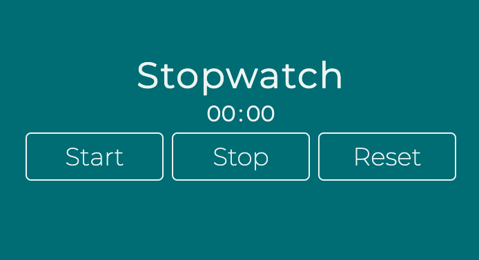
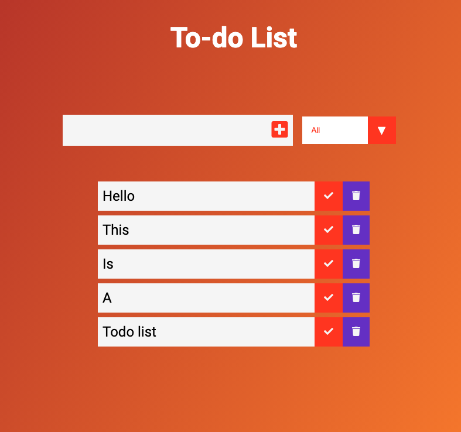

 Vanilla Stopwatch This is simple Stopwatch having 3 buttons namely 'Start', 'Stop' and 'Stop'. These buttons also have some hover effect.
 Todo List This is a todo list having 3 filters for showing the content according to all, completed, or uncompleted.